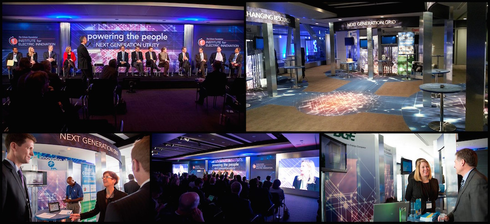
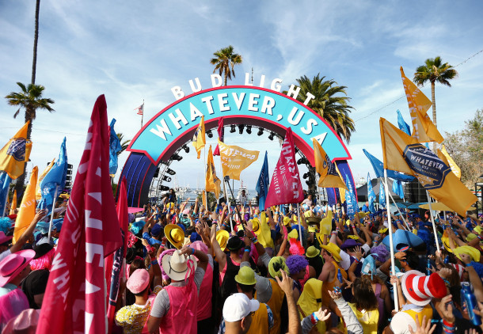

Whatever, USA - Crested Butte, CO
As the lead Account Manager on the project, I directed an internal team of more than 10 members ranging from design, CAD detailing, graphics detailing, graphics production, fabrication, props, transportation, production management, account management and project management. With a budget of $2M, a labor crew of more than 50 and less than 3 days of install time we built the town of "Whatever USA" in Crested Butte, CO.
Cape Town Child Welfare Society - Cape Town, South Africa

While assigned to the Community Development department, I saw that a decline in donor retention had caused such a significant lack of funding they’d shut down some of their most valuable programs. Many donors complained they weren’t informed about where their money went. I requested to be assigned to both Marketing & Funding and Community Development to help solve this problem. Within my 3 month term, I facilitated the design and implementation of a quarterly newsletter featuring stories about current programs, quotes from community members and profiles of employees.
Microsoft Worldwide Partner Conference - The Newseum, Washington, D.C.

Whatever, USA - Crested Butte, CO

Two weeks prior to the event, the Hargrove team and crew arrived to build our scenery—everything from a 40’ T Bud Light bottle to a 16’ T neon lit boom box. We soon learned the entire project was in jeopardy as the board of the town hadn’t approved hosting the event. I partnered with our client to compose a Life Safety and Operations Plan, which the board ultimately cited as the main reason they voted in favor and the show went on.
Ray Ban REMIX - Gansevoort Plaza, New York, NY

House of Whatever Super Bowl - Phoenix, AZ

We transformed this abandoned parking lot into a playground for adults sponsored by Bud Light. Over the course of three days, this space held 49 different experiences from concerts, to painting sessions with Shaquille O’Neal, to a Super Fry station where Super Heroes made fried Oreos. I managed the team responsible for ensuring we met the strict permitting requirements surrounding the Super Bowl. We were one of the only setups in the area that didn’t get shut down at some point due to permitting issues.
ASAE Springtime - Walter E. Washington Convention Center, Washington, D.C.

I’ve honed my ability to handle multiple projects and competing deadlines. Showcased here is the build I managed for the Atlanta Tourism Bureau, 1 of 4 exhibits I managed at this tradeshow.
Whatever, USA 2.0 - Catalina Island, CA
House of Whatever Super Bowl - Phoenix, AZ

In less than 24 hours, we rebuilt the entire space that the Kongos and Nikki Minaj performed on during the first night, for Diplo to perform the next night.
Edison Powering the People Conference - The Newseum, Washington, D.C.
House of Whatever Tour
We repurposed some of the elements from the House of Whatever into a scalable pop-up activation that could meet millennials at places they gravitate toward. This set toured to Stagecoach, Hangouts Festival, CMA Festival, X Games, EDC New York, EDC Vegas and Lollapalooza. At each stop, the pop-up was re-branded to keep in line with the Festival’s requirements and theme.
Whatever, USA 2.0 - Catalina Island, CA
Portfolio
See below for a few samples of projects that showcase the quality of my work and emphasize my attention to detail.
- All
- Bud Light
- ASAE Springtime
- Ray Ban
- Microsoft
- Edison
- Cape Town Child Welfare Society